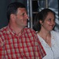

La alegerile locale am oscilat între stabilitatea eficientă a lui Labă Vasile de la PD-L şi dinamismul promis odată cu venirea la putere a USL-istului Muia Marcel, alegându-l în final pe Tati Norocosul de la Slatina, pentru penibil intenţional. În procesul electoral de pe 9 decembrie nu mai avem dubii: preferatul nostru pentru funcţia de parlamentar e tractoristul liberal Verginel Gireadă, poreclit de presa botoşăneană Bond. Verginel Bond. Probabil pentru privirea adâncă şi chipul aristocratic, plin de mister.
Fals intelectual. La propriu

Verginel pentru Parlament
Fost primar al comunei Mihai Eminescu, Bond Gireadă nu-i chiar atât de Verginel precum se prezintă. Viitorul deputat USL e deţinătorul unei condamnări definitive, primite în urma unor matrapazlâcuri cu terenuri. Judecătorii au constatat că Verginel Gireadă e vinovat de abuz în serviciu şi uz de fals şi l-au condamnat la doi ani de închisoare (cu suspendare, căci e politician). Însă, infracţiunea cea mai relevantă pe care i-au imputat-o magistraţii a fost cea de fals intelectual. Pentru că are acoperire dincolo de semnificaţia juridică. În dosarul de candidatură, tractoristul Bond de Ipoteşti figurează ca având profesia de … informatician, deşi abia în urmă cu doi ani a reuşit să-şi cumpere o diplomă de liceu. Să-i dăm cuvântul falsului intelectual în formă continuată:
“Este o ţintă clară şi care ne-am propus-o. În momentul de faţă că suntem singura echipă din judeţ care jucătorii iau o primă substanţială. Şi în această toamnă am mai adus câţiva jucători de valoare şi ţinta noastră deci este câştigarea campionatu’ lu’ local de fotbal.”
spune feciorelnicul candidat, biciuindu-şi neuronul stingher chiar sub sigla Partidului Naţional Liberal. Păstrând proporţiile, observăm asemănările cu retorica şi preocupările celuilalt luptător în revoluţia bunului simţ, B-oierul PNL, nivelul de instruire fiind chiar identic.
Verginel Bond cu Miki Şpagă fac România puternică
Ca de obicei, USL se ţine de cuvânt şi propune o nouă generaţie de lideri politici. Viitorul deputat Verginel Gireadă îl are drept coechipier la Botoşani pe Şerban Mihăilescu, propunerea Alianţei Jos Băsescu pentru Senat. Mihăilescu e mai cunoscut drept Miki Şpagă.
Cum Uniunea Social Liberală promovează valoarea şi competiţia (spre deosebire de alte partide care încurajează nepotismul) Aneta Gireadă, actuala soţie de Verginel, i-a luat locul consortului în funcţia de primar al comunei Mihai Eminescu. Ca să nu cumva să răcească scaunul de ales local cât timp jumătatea masculină a Girezii îşi execută condamnarea penală într-un fotoliu din Camera Deputaţilor. Tanti Aneta e croitoreasă de felul ei. Deh, meserie liberală.
Dacă încă nu v-aţi convins că vicepreşedintele organizaţiei judeţene PNL Botoşani merită demnitatea de membru al puterii legislative, aflaţi că Verginel Gireadă candidează într-un loc predestinat: în colegiul Flămânzi. Flămânzi, aşa cum vom fi cu toţii după ce alde Verginel Tractorel şi Miki Şpagă vor face legea şi legile în Parlamentul României, cel puţin pentru următorii patru ani.
Sursa foto: Botosaneanul.ro


{kind=link}
Dacă nu ei,atunci când?
Comments on this entry are closed.